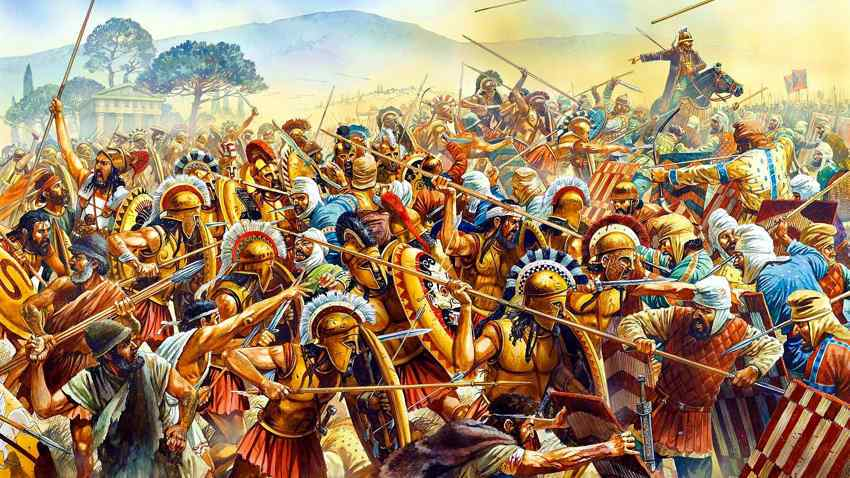

Civilização Persa
O Império Persa, fundado por Ciro, o Grande, foi um dos maiores e mais influentes impérios da Antiguidade, abrangendo vastas regiões da Ásia, África e Europa.
Principais Características:
Império Aquemênida:
O Império Aquemênida (550–330 a.C.) foi o primeiro grande império persa, conhecido por sua administração eficiente e política de tolerância com os povos conquistados.

Estrutura Administrativa:
O império foi dividido em províncias chamadas satrapias, cada uma administrada por um sátrapa que era responsável perante o imperador.
Conquistas Científicas e Tecnológicas:
Os persas contribuíram para a astronomia, medicina e arquitetura. Criaram sistemas avançados de irrigação e desenvolveram uma rede de estradas e correios.
Religião:
A religião persa antiga era baseada no Zoroastrismo, uma das religiões monoteístas mais antigas do mundo, com conceitos de dualidade entre o bem e o mal.
Cultura e Arquitetura:
A cultura persa valorizava grandiosas construções, como o palácio de Persépolis, e desenvolveu uma arte rica em detalhes e simbolismo.